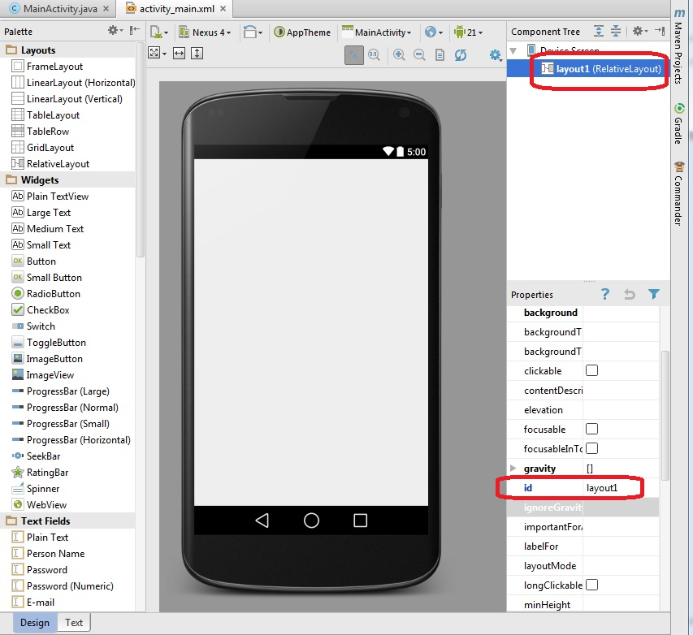
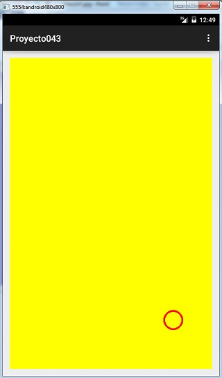

39 - Evento touch: dibujar un círculo |
Una actividad fundamental es poder detectar cuando el usuario selecciona o toca la pantalla táctil.
Desarrollar un programa que dibuje un círculo en la coordenada 100,100. Cuando se presione otra parte de la pantalla táctil proceder a trasladar el círculo a dicha coordenada.
1 - Creamos un proyecto llamado: Proyecto044
Borramos el TextView que agrega automáticamente el Android Studio y definimos el id del RelativeLayout con el valor: layout1:
Ahora codificamos la clase donde se encuentra toda la lógica para capturar el evento onTouch:
package ar.com.tutorialesya.proyecto043;
import android.content.Context;
import android.graphics.Canvas;
import android.graphics.Paint;
import android.support.v7.app.ActionBarActivity;
import android.os.Bundle;
import android.view.Menu;
import android.view.MenuItem;
import android.view.MotionEvent;
import android.view.View;
import android.widget.RelativeLayout;
public class MainActivity extends ActionBarActivity implements View.OnTouchListener {
private int corx, cory;
private Lienzo fondo;
@Override
protected void onCreate(Bundle savedInstanceState) {
super.onCreate(savedInstanceState);
setContentView(R.layout.activity_main);
corx = 100;
cory = 100;
RelativeLayout layout1 = (RelativeLayout) findViewById(R.id.layout1);
fondo = new Lienzo(this);
fondo.setOnTouchListener(this);
layout1.addView(fondo);
}
@Override
public boolean onCreateOptionsMenu(Menu menu) {
// Inflate the menu; this adds items to the action bar if it is present.
getMenuInflater().inflate(R.menu.menu_main, menu);
return true;
}
@Override
public boolean onOptionsItemSelected(MenuItem item) {
// Handle action bar item clicks here. The action bar will
// automatically handle clicks on the Home/Up button, so long
// as you specify a parent activity in AndroidManifest.xml.
int id = item.getItemId();
//noinspection SimplifiableIfStatement
if (id == R.id.action_settings) {
return true;
}
return super.onOptionsItemSelected(item);
}
public boolean onTouch(View v, MotionEvent event) {
corx = (int) event.getX();
cory = (int) event.getY();
fondo.invalidate();
return true;
}
class Lienzo extends View {
public Lienzo(Context context) {
super(context);
}
protected void onDraw(Canvas canvas) {
canvas.drawRGB(255, 255, 0);
Paint pincel1 = new Paint();
pincel1.setARGB(255, 255, 0, 0);
pincel1.setStrokeWidth(4);
pincel1.setStyle(Paint.Style.STROKE);
canvas.drawCircle(corx, cory, 20, pincel1);
}
}
}
La clase que captura el evento onTouch debe implementar la interface OnTouchListener (con esto indicamos que la clase debe implementar el método onTouch:
public class MainActivity extends ActionBarActivity implements View.OnTouchListener {
Definimos como atributos la coordenada donde se debe dibujar el círculo y la referencia al objeto de la clase Lienzo:
private int corx,cory;
private Lienzo fondo;
En el método onCreate del ActionBarActivity inicializamos los tres atributos de la clase y mediante el método setOnTouchListener indicamos que la propia clase capturará el evento onTouch del objeto fondo:
corx=100;
cory=100;
fondo=new Lienzo(this);
fondo.setOnTouchListener(this);
linearLayout.addView(fondo);
El método onTouch es el que implementamos de la clase OnTouchListener. En este método mediante el objeto event obtenemos la coordenada x e y donde el usuario seleccionó con el dedo y procedemos a llamar al método invalidate para que vuelva a pintarse el control fondo (el método invalidate borra el contendio del objeto de la clase Lienzo y vuelve a ejecutarse el método onDraw):
public boolean onTouch(View v, MotionEvent event) {
corx=(int)event.getX();
cory=(int)event.getY();
fondo.invalidate();
return true;
}
El método onDraw pinta el fondo de amarillo, crea un objeto de la clase Paint y procede a dibujar un círculo en las coordenadas indicadas por los atributos corx y cory:
protected void onDraw(Canvas canvas) {
canvas.drawRGB(255,255,0);
Paint pincel1=new Paint();
pincel1.setARGB(255,255,0,0);
pincel1.setStrokeWidth(4);
pincel1.setStyle(Paint.Style.STROKE);
canvas.drawCircle(corx, cory, 20, pincel1);
}
La vista previa de la aplicación es:
Este proyecto lo puede descargar en un zip desde este enlace: proyecto043.zip